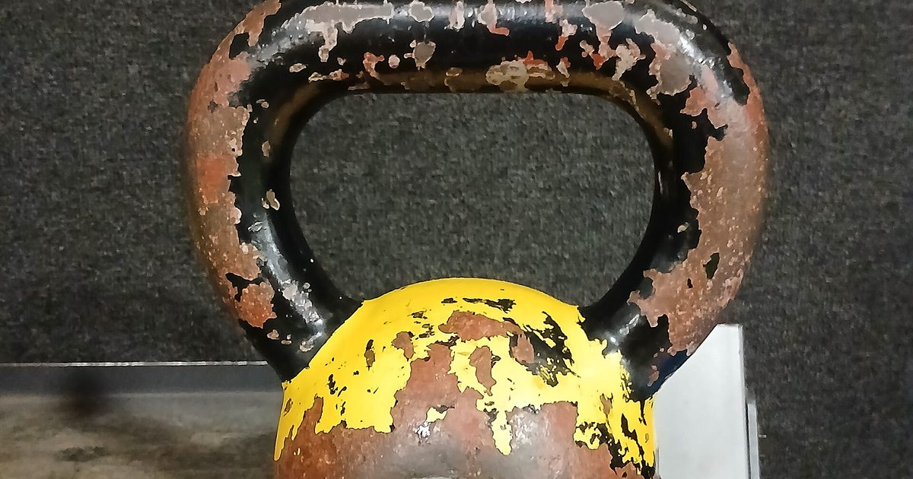

Minimal Gear
Kettlebell vs Dumbbell for a Small Home Setup
They are not interchangeable and the difference is not the shape. It is that one is built for swinging and the other for pressing, and only one of those is quiet enough for a flat.

The kettlebell versus dumbbell question usually gets answered on aesthetics or tribal loyalty. The genuine difference is mechanical and it has clear consequences for home training.
The actual difference
A dumbbell's mass is centred on the handle. A kettlebell's mass hangs below and behind it.
That offset does two things. It makes the weight want to rotate around your hand, which is why kettlebell movements involve the bell travelling around the forearm. And it means the load can be swung — the offset mass generates momentum that a centred weight does not.
Everything else follows. Kettlebells suit ballistic, swinging, momentum-based movements. Dumbbells suit controlled, grinding, pressing movements.
What kettlebells do better
Swings and ballistic work. The hip hinge performed explosively, which is genuinely hard to replicate with anything else. A good conditioning stimulus and a good posterior-chain one.
Goblet squats. The handle geometry makes holding a kettlebell at the chest more comfortable than a dumbbell.
Turkish get-ups and loaded carries. The offset mass makes these more demanding and arguably more useful.
Grip and forearm work. The thick handle and offset load are harder to hold.
What dumbbells do better
Pressing. Overhead and floor pressing are considerably more comfortable with a centred mass. A kettlebell press has the bell resting against your forearm, which some people find fine and others do not.
Rows. The centred handle sits better in a rowing path.
Fine weight increments. Adjustable dumbbells give you 2-kilogram steps. Kettlebells are usually sold in 4-kilogram jumps, which is a large increase when you are at 12 kilograms.
Single-leg work. Split squats and single-leg Romanian deadlifts are more comfortable with a dumbbell in one hand — the session is in the one dumbbell workout.
Adjustability. Adjustable kettlebells exist and are generally less satisfactory than adjustable dumbbells — see the adjustable dumbbells buying guide.
The flat problem
The consideration that usually settles it for readers of this site, and one that rarely appears in comparisons.
Kettlebell training is loud. Swings involve accelerating a mass and decelerating it, transmitting force into the floor. Setting a kettlebell down after a set of swings is a substantial impact. Snatches and cleans involve the bell arriving against your forearm with an audible thud.
If you live above someone, kettlebell ballistics are effectively unavailable, which removes most of what a kettlebell is uniquely good for. You are then left with goblet squats and carries, both of which a dumbbell does as well or better.
This is not a small consideration. The noise question governs a great deal of home training and is covered fully in quiet home workouts.
A kettlebell's advantages are mostly ballistic, and ballistic is exactly what you cannot do above a neighbour.
Which to buy
Buy a dumbbell if: you live in a flat or above anyone; your training is primarily strength rather than conditioning; you want fine weight increments; or you want one implement to cover pressing, rowing and single-leg work.
That is most people reading this, which is why the equipment recommendations elsewhere on this site default to a dumbbell — see the minimalist home gym guide.
Buy a kettlebell if: you have a ground floor, a garden or a garage; you want conditioning as much as strength; and swings appeal to you. Kettlebell swings are a genuinely good exercise and there is no close bodyweight substitute.
Buy neither yet if you have not solved pulling. Resistance bands or a doorway pull-up bar add more than any weight, because they cover a movement pattern you otherwise cannot train — see rows at home.
What weight
For a dumbbell: something you can press overhead in one hand for eight to ten repetitions, typically 8 to 15 kilograms for untrained adults.
For a kettlebell: heavier than people expect, because the main use is swings, which are a hip movement rather than an arm movement. 12 to 16 kilograms suits most untrained women and 16 to 24 most untrained men, as a starting point rather than a rule. A kettlebell light enough to press easily is too light to swing usefully, which is the standard first-purchase mistake.
Whichever you buy, weekly volume drives adaptation up to a point,1 and light loads taken close to failure produce comparable muscle growth to heavy ones.2 The implement matters less than whether the sets are hard.
If you end up with both
A reasonable division: the kettlebell for swings, goblet squats and carries; the dumbbell for pressing, rowing and single-leg work.
In practice most home trainees who own both use the dumbbell more, because pressing and single-limb work are what home strength training is mostly made of, and because swings need space and a floor you can be noisy on.
If storage is tight, keep the dumbbell — the storage options are in how to store home gym equipment in a tiny flat.
A note on the kettlebell swing
Since the swing is the main thing a kettlebell offers that nothing else does, it is worth being precise about what it is and is not.
A swing is a hip hinge performed explosively. The bell travels because the hips drive it, not because the arms lift it — the arms are effectively ropes. Done correctly it trains the posterior chain and produces a substantial conditioning effect in a short time, which is why it has the reputation it does.
Done incorrectly it becomes a squat with a front raise, which loads the lower back and the shoulders in ways neither wants. This is the most commonly miscoached exercise in home fitness, and learning it from a video is genuinely harder than learning most movements that way, because the fault is felt rather than seen.
If you buy a kettlebell primarily for swings and cannot get instruction, spend the first few weeks on the hinge pattern unloaded first — the standing hip hinge described in standing workouts and the Romanian deadlift progression in glute exercises at home both build the same pattern without the momentum. Add the bell once the hinge is automatic.
Ballistic hinging with load is not a good place to start if you have a history of lower back pain. The explosive element removes much of your ability to correct position mid-movement. Speak to a physiotherapist first, and consider whether the controlled alternatives give you most of what you want with less to go wrong.
Space and floor requirements
One practical point that often decides the question before any of the above does.
Swings need roughly two metres of clear length in front of you and enough ceiling height that the bell can rise to chest level with your arms extended. That is more than a lot of flats have spare, and considerably more than a dumbbell needs — the per-exercise measurements are in how much floor space you need.
They also need a floor you can set a heavy object down on repeatedly. On laminate over a suspended timber floor, that is a problem for both the floor and the neighbour. On concrete or a garage slab, it is not.
If you are choosing between the two implements and your space fails either of those tests, the decision is already made regardless of which you would prefer.
Where to go next
For choosing an adjustable model, see the adjustable dumbbells buying guide. For the free alternative to both, see DIY home gym equipment.
Frequently asked questions
Should I buy a kettlebell or a dumbbell for home?
A dumbbell, for most people training in a flat. Kettlebells excel at ballistic movements such as swings, and swings are exactly what you cannot do above a neighbour. Without the ballistics, a dumbbell does everything a kettlebell does as well or better.
What is the actual difference between a kettlebell and a dumbbell?
A dumbbell’s mass is centred on the handle; a kettlebell’s hangs below and behind it. That offset lets the weight be swung and makes it rotate around the hand, which is why kettlebells suit ballistic work and dumbbells suit controlled pressing.
Are kettlebells too loud for an apartment?
Swings, snatches and cleans generally are. They involve accelerating and decelerating a mass, transmitting force into the floor, and setting the bell down after a set is a substantial impact. Goblet squats and carries are fine.
What weight kettlebell should a beginner buy?
Heavier than most people expect, because the main use is swings, which are a hip movement rather than an arm movement. Roughly 12 to 16 kilograms for untrained women and 16 to 24 for untrained men as a starting point. A kettlebell light enough to press easily is too light to swing usefully.
Can you build muscle with just a kettlebell?
Yes, though pressing and rowing are less comfortable than with a dumbbell and the weight increments are coarse — usually four kilograms, which is a large jump at lower weights. For pure muscle building, a dumbbell is the more practical choice.
Sources and further reading
- Schoenfeld BJ, Ogborn D, Krieger JW. “Dose-response relationship between weekly resistance training volume and increases in muscle mass: A systematic review and meta-analysis.” Journal of Sports Sciences, 2017;35(11):1073–1082. PubMed.
- Schoenfeld BJ, Grgic J, Ogborn D, Krieger JW. “Strength and Hypertrophy Adaptations Between Low- vs. High-Load Resistance Training: A Systematic Review and Meta-analysis.” Journal of Strength and Conditioning Research, 2017;31(12):3508–3523. PubMed.
- World Health Organization. WHO Guidelines on Physical Activity and Sedentary Behaviour. 2020.
- NHS. Strength and Flex exercise plan.
Comments
Comments are not enabled yet. Add a hosted comment embed (Disqus, Commento, Giscus) inside this container when you are ready.